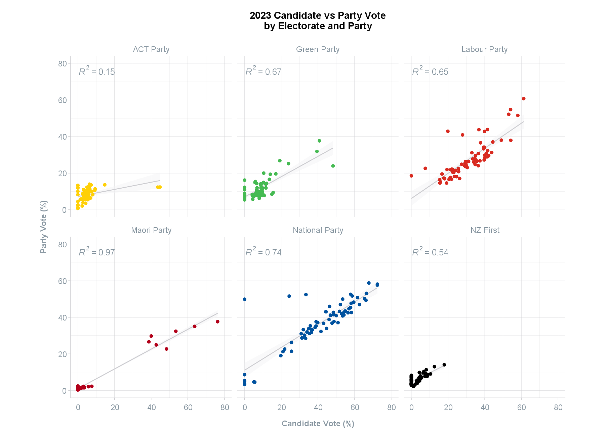

Party and Candidate Votes
Source:vignettes/articles/party-and-candidate-votes.rmd
party-and-candidate-votes.rmd
This article explores the party_votes and
candidate_votes datasets.
Party and Candidate Votes
The party_votes and candidate_votes
datasets contain party and candidate votes, respectively, by electorate
and party. Currently, the party_votes has all parties
listed, including the informal vote, while the
candidate_votes have only the successful parties listed
with the remaining parties listed as “Other”. The informal vote is also
not included.
Future updates to the candidate_votes dataset will
replicate the party_votes dataset so that the “Other”
category is broken down into all parties and the informal vote is
included.
Upload data
View the shape of data frame.
df <- get_data("party_votes")
head(df)
#> # A tibble: 6 × 5
#> Election Ballot Electorate Party Votes
#> <dbl> <chr> <chr> <chr> <int>
#> 1 2023 Party Auckland Central ACT Party 3301
#> 2 2023 Party Auckland Central Animal Justice Party 50
#> 3 2023 Party Auckland Central Aotearoa Legalise Cannabis Party 142
#> 4 2023 Party Auckland Central DemocracyNZ 32
#> 5 2023 Party Auckland Central Freedoms NZ 48
#> 6 2023 Party Auckland Central Green Party 8503
df1 <- get_data("candidate_votes")
head(df1)
#> # A tibble: 6 × 6
#> Election Ballot Electorate Party Votes Percentage
#> <dbl> <chr> <chr> <chr> <dbl> <dbl>
#> 1 2023 Candidate Auckland Central ACT Party 1235 3.59
#> 2 2023 Candidate Auckland Central Green Party 16624 48.3
#> 3 2023 Candidate Auckland Central Labour Party 2608 7.57
#> 4 2023 Candidate Auckland Central National Party 12728 37.0
#> 5 2023 Candidate Auckland Central NZ First 0 0
#> 6 2023 Candidate Auckland Central Maori Party 0 0Merging datasets
Merge the two candidate and party vote datasets together in a long form data frame.
df <- df %>%
mutate(Party = ifelse(Party %in% c("Labour Party", "National Party", "Green Party",
"ACT Party", "NZ First", "Maori Party"), Party,
"Other")) %>%
group_by(Election, Electorate, Ballot, Party) %>%
summarise(Votes = sum(Votes), .groups = 'drop') %>%
ungroup() %>%
group_by(Election, Electorate, Ballot) %>%
mutate(Percentage = Votes/sum(Votes)*100) %>%
ungroup()
df2 <- rbind(df, df1)
head(df2)
#> # A tibble: 6 × 6
#> Election Electorate Ballot Party Votes Percentage
#> <dbl> <chr> <chr> <chr> <dbl> <dbl>
#> 1 1996 Albany Party ACT Party 3910 10.9
#> 2 1996 Albany Party Labour Party 7221 20.2
#> 3 1996 Albany Party NZ First 3536 9.89
#> 4 1996 Albany Party National Party 15812 44.2
#> 5 1996 Albany Party Other 5280 14.8
#> 6 1996 Aoraki Party ACT Party 1677 5.04Plot
Visualise the 2023 candidate vote by party vote in a scatter plot faceted by party.
df2 <- df2 %>%
filter(Election == 2023) %>%
mutate(Ballot = ifelse(Ballot == "Party", "Party Vote", "Candidate Vote")) %>%
select(Election, Ballot, Electorate, Party, Percentage) %>%
pivot_wider(names_from = Ballot, values_from = Percentage)
df2[is.na(df2)] <- 0
df2 %>%
filter(Party != "Other") %>%
ggplot(aes(x = `Candidate Vote`, y = `Party Vote`, colour = Party)) +
geom_smooth(method = "lm", se = TRUE, formula = y ~ x,
colour = scgUtils::colour_pal("French Grey"),
size=0.5, fill = "#F4F4F5", alpha = 0.5) +
geom_point() +
ggpmisc::stat_poly_eq(colour = scgUtils::colour_pal("Regent Grey")) +
facet_wrap(.~Party) +
scale_colour_manual(values = scgUtils::colour_pal("polNZ")) +
coord_equal(ylim = c(0,80), xlim = c(0,80)) +
labs(title = "2023 Candidate vs Party Vote\nby Electorate and Party",
y = "Party Vote (%)\n",
x = "Candidate Vote (%)") +
scgUtils::theme_scg() +
theme(legend.position = "none")